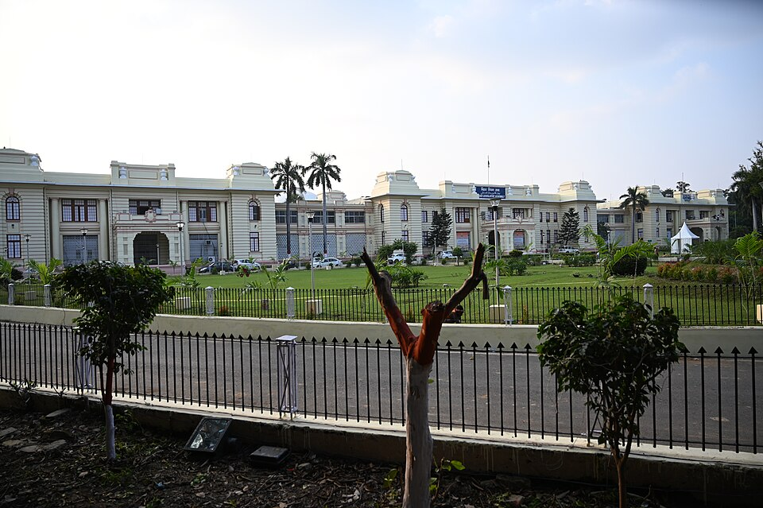

71st BPSC PYQ (p.54)BPSC quotes the Bihar Economic Survey verbatim: the 71st paper carried a question answered straight from "Bihar Economic Survey 2024-25, Page No. 478, Table A 12.4" — proof that headline indicators (GSDP growth, per-capita income, sector shares) are read off ES tables. The 70th also asked the contribution of agriculture to Bihar's GDP (p.40). Learn the ES 2025-26 numbers below cold.
70th BPSC PYQ (p.34)Caste-list question: "Which community was categorized as Scheduled Caste by a 2015 Bihar government notification, quashed in July 2024 by the Supreme Court?" — answer: Tanti-Tantwa. The SC ruled states cannot modify the SC list under Article 341 — only the President/Parliament can. Same theme family as the 65% quota litigation below.
71st BPSC PYQ (p.10 & p.14)Poverty-measure theme: the 71st asked about the UNDP's Capability Poverty Measure (child malnutrition + female illiteracy — male illiteracy is NOT a CPM indicator) and an NFHS-5 multidimensional poverty question. Pair with: 'Poverty and Un-British Rule in India' (1901) = Dadabhai Naoroji (70th BPSC, p.12).
💡 Deep-dive ready: Census history 1872→2027, caste-enumeration timeline (1931 → SECC 2011 → Bihar 2023), quota jurisprudence ladder (Balaji → Indra Sawhney → Janhit Abhiyan), and MPI methodology:
Census, Caste Counts & Quota Law Detail →
A. Bihar Caste Survey 2023 — The Headline Numbers MOST IMPORTANT TABLE
Report released 2 October 2023 (by Development Commissioner Vivek Singh). Bihar became the first state since 1931 to enumerate all castes — the trigger for the national caste-census demand now built into Census 2027.
Group
Share
Count
Note
EBC (अत्यंत पिछड़ा वर्ग)
36.01%
4,70,80,514
Largest single bloc — 112 castes
OBC
27.13%
3,54,63,936
34 castes (some tables print 27.12%)
SC
19.65%
2,56,89,820
23 castes
ST
1.68%
21,99,361
32 communities
General / "upper" castes
15.52%
—
Unreserved category
Total population
13.07 crore
—
209 notified castes enumerated
OBC + EBC combined
63.13%
—
The political "backward" bloc
🧠 Mnemonic — "E36-O27-S20-G15-T2"
Read the survey top-down: EBC 36.01 → OBC 27.13 → SC ~20 (19.65) → General 15.52 → ST ~2 (1.68). Biggest at top, smallest at bottom. And the caste-count arc: 1931 (last census caste count) → 2023 (Bihar survey) → 2027 (national caste enumeration).
B. The 65% Quota Law — Vidhan Sabha → High Court → Supreme Court PENDING
Date
Event
Nov 2023
Bihar legislature raised quotas on caste-survey basis: BC 12→18%, EBC 18→25%, SC 16→20%, ST 1→2% = 65% total (with 10% EWS, effective reservation = 75%)
20 Jun 2024
Patna High Court struck down the 65% law — breach of the Indra Sawhney 50% ceiling; no "exceptional circumstances" shown; HC also said the creamy layer should be excluded
28–29 Jul 2024
Supreme Court declined to stay the HC order; agreed to hear Bihar's appeal
As of 15 Jul 2026
Appeal still pending; no final SC verdict → the 65% law remains inoperative

Bihar Vidhan Sabha, Patna — where the 65% quota hike was passed in Nov 2023, later struck down by the Patna High Court (Jun 2024). Image: Wikimedia Commons.
C. Census 2027 — Two Phases + Caste Enumeration HOT 2026-27
Decision: CCPA decided in April 2025 that caste enumeration will be part of the census; formal MHA notification on 7 January 2026.
Phase I — Houselisting & Housing:April–September 2026; 30 days per state/UT, plus a 15-day self-enumeration window before it.
Phase II — Population Enumeration + CASTE:February 2027; reference date ("Census moment") 00:00 hrs, 1 March 2027. Snow-bound areas (Ladakh, J&K, Himachal, Uttarakhand): Sep–Oct 2026, reference 1 October 2026.
Identity numbers:16th Census of India / 8th after Independence; first fully digital census (mobile apps, self-enumeration portal, 16 languages); budget ₹11,718.24 crore; first caste count since 1931.
Bihar angle: the caste-census demand originated with Bihar's 2023 survey and 65% quota push — Census 2027 caste data could reopen the 50%-ceiling debate. Bihar ran Phase-I houselisting in the Apr–Sep 2026 window like all states.
President Pratibha Patil being enumerated for Census 2011 — India counts every resident in two phases (houselisting, then population enumeration). Census 2027 repeats the cycle digitally, adding caste for the first time since 1931. Image: Wikimedia Commons (PIB).
D. Poverty — NITI Aayog National MPI BIHAR = HIGHEST
Release
Data basis
India
Bihar
National MPI: A Progress Review 2023 (released 17 Jul 2023)
NFHS-4 (2015-16) → NFHS-5 (2019-21)
24.85% → 14.96%; 13.5 crore exited poverty
~51.9% → ~33.8% — largest absolute decline of any state, yet still India's poorest
NITI MPI 2025 update
2022-23 estimates
~11.3%
~26.6% — still the highest, then Jharkhand 23.3%, UP 17.4%
Variant alert: some coaching notes print 51.3%→33.76%; NITI-consistent figures are 51.9%→33.8%. If BPSC offers both, prefer 51.9→33.8.
Exam frame: "largest decline" AND "still highest" are both true of Bihar — BPSC exploits this double truth.
E. Bihar Economic Survey 2025-26 (20th edition, tabled early Feb 2026) TABLE-FODDER
Indicator
Value
GSDP growth 2024-25 (constant prices)
8.6% (vs India's 6.5%)
GSDP growth 2024-25 (current prices)
13.1%
Per-capita GSDP 2024-25
₹76,490 (+13% YoY); India ₹2,34,859 — Bihar ≈ 1/3rd of national average
Per-capita GDP 2023-24
₹68,624 — lowest among all states (India ₹2,15,935); highest district: Patna ₹2,41,220; then Begusarai ₹1,05,600; lowest: Sheohar ₹38,214, Araria ₹44,134; 11 districts below ₹50,000
2024-25 ₹9.92 lakh cr → 2025-26 RE ₹11.40 lakh cr → 2026-27 BE ₹13.09 lakh cr (+15%)
F. People & Households — NCAER, NFHS-5, PLFS SUPPORT DATA
NCAER (Jan 2025): Bihar population projection 12.86 crore (2024) = 9.2% of India; growth 1.45%/yr vs 0.9% national; dependency ratio 65.2% (2026 proj) vs 54.3% national; density 1,405/km².
PLFS 2023-24 (all-India): unemployment rate 3.2% (usual status); LFPR 60.1%. Bihar's LFPR has historically been among India's lowest (state figure not freshly published in-window).
NFHS-5 (2019-21): Bihar institutional births ~76% (vs 63.8% in NFHS-4; India 88.6%); female population with 6+ years of schooling 61.1% — lowest in India (Kerala 95.5% highest).
📋 Fact Matrix — Item | Value | As-Of
Item
Value
As-Of Date
Bihar caste survey — EBC share
36.01% (4,70,80,514)
Report 2 Oct 2023
Caste survey — OBC / SC / ST / General
27.13% / 19.65% / 1.68% / 15.52%
2 Oct 2023
OBC+EBC combined
63.13% of 13.07 crore; 209 castes counted
2 Oct 2023
65% quota law
BC 18 + EBC 25 + SC 20 + ST 2 = 65% (+10% EWS = 75%)
Caste survey → quota → census chain: Bihar's 2023 caste survey (EBC 36.01%, OBC+EBC 63.13%) powered the 65% quota law; its strike-down by the Patna HC and the pendency in the SC is why the Centre's Census 2027 caste enumeration matters so much to Patna — fresh all-India caste data could reopen the 50% ceiling debate.
Data-driven welfare targeting: the state runs its flagship Mukhyamantri Mahila Rojgar Yojana (₹10,000 to 1.56 crore women from Sept 2025 — cross-link Topic #15) and pension hikes to 1.16 crore pensioners off survey-derived beneficiary databases.
Fiscal dependence in numbers: Bihar raises only ~26% of revenue receipts on its own; ~74% comes from the Centre (tax devolution + grants). 16th FC gives Bihar 9.95% of the divisible pool (2026-31) — the 2nd-highest share after UP.
The development gap in one line: per-capita GSDP ₹76,490 ≈ one-third of India's; Saat Nischay-3 (2025-30) explicitly targets doubling per-capita income — the ES numbers on this page are the baseline BPSC will test.
Demographic pressure: 1.45%/yr population growth (national 0.9%) and a 65.2% dependency ratio explain the NDA's 1-crore-jobs promise and outmigration debates — demography is Bihar's core exam theme.
🔗 Cross-Topic Connections
↔ Topic #15 (Bihar Govt Schemes): MMRY, pension hikes, free electricity — all sized using survey/beneficiary data; caste survey feeds EBC/SC/ST scheme targeting. ↔ Topic #16 (State Budget): ES 2025-26 tables (GSDP ₹13.09 lakh cr BE, debt 37.7%) and 16th FC numbers (9.95% devolution) sit behind every Budget 2026-27 figure. ↔ Topic #17 (Appointments in Bihar): the 65% quota litigation and caste data shaped the 2025 election that made Samrat Chaudhary the first BJP CM (15 Apr 2026). ↔ Topic #23 (Bihar in National Reports): MPI, PLFS, NCAER and NFHS rankings of Bihar are shared territory — revise both pages together. ↔ Topic #7 (Economy) & #86 (Poverty & Employment): GSDP/PCI concepts, MPI method, poverty lines — the static-theory halves of this page. ↔ Topic #44 (Judiciary) & #40 (FRs): Indra Sawhney (1992), Janhit Abhiyan (2022), Article 341 SC-list bar, Article 16(4) — the quota-law backbone. ↔ Topic #47 (Constitutional Bodies): 16th Finance Commission (Panagariya) devolution; ECI's census-linked delimitation horizon. ↔ Topic #96 (Districts & Demography): 38 districts, district PCI extremes (Patna vs Sheohar), density 1,405/km².
📰 Current Relevance & Potential Traps (2025–26 Cycle)
Live process on exam day: Census 2027 Phase-I houselisting runs Apr–Sep 2026 — including Bihar — right through the 26 Jul 2026 prelims. Expect a "Census 2027 phases / reference date / caste" question; notification date 7 Jan 2026 and outlay ₹11,718.24 cr are the one-liners.
Trap — phase swap: caste is counted in Phase II (Feb 2027), NOT Phase-I houselisting. Reference date 1 Mar 2027; snow-bound areas use 1 Oct 2026 — don't merge the two.
Trap — quota status: as of 15 Jul 2026 the 65% law is NOT in force (HC struck it 20 Jun 2024; SC refused stay Jul 2024; appeal pending). Any option saying "Bihar currently implements 65% reservation" is wrong.
Trap — MPI variants: use 51.9%→33.8% (NITI-consistent), not the 51.3→33.76 coaching variant; and remember Bihar is BOTH "largest decline" AND "still highest (~26.6% in 2025 update)".
Trap — real vs nominal: GSDP growth 8.6% = constant prices; 13.1% = current prices. BPSC's ES-table questions (71st p.54 pattern) hinge on exactly this.
Trap — EBC vs OBC: EBC (36.01%) is the larger bloc; OBC is 27.13%. Combined = 63.13%. Swapped options are near-certain.
Fresh Feb 2026 set: ES 2025-26 (20th edition) + Budget 2026-27 (3 Feb 2026) + 16th FC (1 Feb 2026, Bihar 9.95%) arrived together — learn them as one cluster: per-capita ₹76,490, sectors 23:23:54, GSDP ₹13.09 lakh cr.
✍️ MCQ Practice Set — 25 Questions (BPSC Level)
Q1. As per the Bihar Economic Survey 2025-26, Bihar's GSDP growth in 2024-25 at constant (real) prices was: (71st BPSC ES-table pattern)
✅ Correct Answer: (B) — 8.6% at constant prices, well above India's 6.5%. Trap (C): 13.1% is the CURRENT-price (nominal) growth — the 71st BPSC's ES-table question (p.54) exploited exactly this real-vs-nominal distinction. 6.5% is the all-India figure.
Q2. Which community was categorized as Scheduled Caste by a 2015 Bihar government notification that the Supreme Court quashed in July 2024, ruling that states cannot alter the SC list under Article 341? (70th BPSC PYQ)
✅ Correct Answer: (A) — Tanti-Tantwa (a weaver community) was moved from the EBC to the SC list by the 2015 notification; the SC held only the President (by public notification) and Parliament (by law) can modify the Article 341 list — states have no such power. Lal Begi, Dabgar and Pano are distractor communities from the same litigation coverage.
Q3. 'Poverty and Un-British Rule in India' (1901), the classic indictment of colonial economic drain, was written by: (70th BPSC PYQ)
✅ Correct Answer: (C) — Dadabhai Naoroji expounded his 'drain of wealth' theory here. Trap (A): R.C. Dutt wrote 'The Economic History of India' — the two are routinely swapped in exam options.
Q4. Consider the following statements about the Capability Poverty Measure (CPM) developed by the UNDP (71st BPSC PYQ):
1. CPM includes child malnutrition as a proxy for lack of health and nourishment.
2. Female illiteracy is included to reflect deprivation in education and knowledge.
3. It considers male illiteracy as a key indicator of capability poverty.
Which of the statements given above are correct?
✅ Correct Answer: (C) — CPM uses child malnutrition (underweight under-5s), births unattended by trained health personnel, and FEMALE illiteracy. Statement 3 is the trap — MALE illiteracy is not a CPM indicator; the index deliberately tracks women's capability deprivation.
Q5. NITI Aayog's 'National MPI: A Progress Review 2023' — which showed 13.5 crore Indians exiting multidimensional poverty — is based on a comparison of: (71st BPSC MPI/NFHS theme)
✅ Correct Answer: (C) — The review maps NFHS-4 (2015-16) against NFHS-5 (2019-21): India fell from 24.85% to 14.96%. The 71st BPSC asked an NFHS-5 MPI question directly (p.14). Census and PLFS measure different things — population stock and employment respectively.
Q6. Bihar released the report of its landmark caste-based survey — the first such full caste enumeration by any state since 1931 — on:
✅ Correct Answer: (B) — The report was tabled/released on 2 October 2023 (Gandhi Jayanti), presented by Development Commissioner Vivek Singh; the legislature then passed the 65% quota law in November 2023. The 2022 date is the survey's field-work year — the classic year-swap trap.
Q7. According to NITI Aayog's National MPI Progress Review 2023, Bihar's multidimensional poverty headcount fell from ___ (2015-16) to ___ (2019-21):
✅ Correct Answer: (A) — Bihar's ~51.9%→~33.8% is the largest absolute decline among states, though it remains India's poorest state. Trap (B): 24.85%→14.96% is the ALL-INDIA figure. Note: some notes print 51.3→33.76; the NITI-consistent figures are 51.9→33.8.
Q8. Before the caste enumeration planned for Census 2027, caste was last fully counted and published in an Indian Census in:
✅ Correct Answer: (A) — 1931 is the textbook answer. Trap (B): 1941 caste data was collected but never published (WWII austerity). Trap (D): SECC 2011 collected caste data but it was never officially released — which is why "first caste count since 1931" is the Census 2027 tagline.
Q9. Consider the following statements about India's reservation jurisprudence:
1. Indra Sawhney v. Union of India (1992) capped total reservation at 50%.
2. The same judgment mandated exclusion of the 'creamy layer' among OBCs.
3. The 50% ceiling also binds the 10% EWS quota introduced by the 103rd Amendment.
Which of the statements given above are correct?
✅ Correct Answer: (B) — Statements 1 and 2 are the core of Indra Sawhney. Statement 3 is the trap: in Janhit Abhiyan v. Union of India (2022) the SC upheld the 10% EWS quota operating ABOVE the 50% cap. Bihar's 65% law failed precisely because the HC found no exceptional circumstances to cross 50%.
Q10. As per the Bihar Economic Survey 2025-26, agriculture's share in Bihar's GSDP (2024-25) is approximately: (70th BPSC asked this for an earlier year)
✅ Correct Answer: (C) — The 2024-25 sector split is Agriculture 23% : Manufacturing 23% : Services 54% — easy to remember as "23-23-54". The 70th BPSC (p.40) asked this very question for an earlier year with options 17/19/26/33 — the number drifts year to year, so anchor to the latest ES.
Q11. In Bihar's 2023 caste survey, the Extremely Backward Classes (EBC) share of the population was:
✅ Correct Answer: (D) — EBC = 36.01% (4,70,80,514 people across 112 castes), the single largest bloc. Trap (A): 27.13% is the OBC share — BPSC will surely swap EBC and OBC in options. 19.65% is SC; 15.52% is General.
Q12. OBC and EBC together constitute what share of Bihar's population as per the 2023 caste survey?
✅ Correct Answer: (D) — 27.13% + 36.01% = 63.13% — the 'backward bloc' figure that anchored the 65% quota demand. Trap (A): 51.9% is Bihar's OLD MPI headcount (2015-16) — a cross-topic number planted to catch rote learners.
Q13. Consider the following statements about Bihar's 2023 reservation-enhancement law:
1. EBC reservation was raised from 18% to 25%.
2. SC reservation was raised from 16% to 20%.
3. Including the 10% EWS quota, total reservation became 65%.
Which of the statements given above are correct?
✅ Correct Answer: (A) — The law set BC 18% + EBC 25% + SC 20% + ST 2% = 65%. Statement 3 is the arithmetic trap: 65% is EXCLUSIVE of EWS — with the 10% EWS the effective total was 75%, not 65%.
Q14. The Patna High Court struck down Bihar's 65% reservation law on:
✅ Correct Answer: (C) — 20 June 2024, on the ground that crossing the Indra Sawhney 50% ceiling lacked 'exceptional circumstances'. Trap (D): 28 July 2024 is when the SUPREME Court declined to stay the HC order — a date-pairing trap. (A) is the caste-survey release date.
Q15. The reference date ('Census moment') for the population enumeration phase of Census 2027 is:
✅ Correct Answer: (D) — Phase II enumeration (Feb 2027) uses 00:00 hrs, 1 March 2027. Trap (B): 1 October 2026 applies ONLY to snow-bound Ladakh, J&K, Himachal and Uttarakhand (enumerated Sep-Oct 2026). April 2026 is when Phase-I houselisting begins.
Q16. Consider the following statements about Census 2027:
1. It is the 16th Census of India and the 8th after Independence.
2. It is India's first fully digital census (apps, self-enumeration portal, 16 languages).
3. Caste enumeration is part of the Phase-I houselisting operation.
Which of the statements given above are correct?
✅ Correct Answer: (D) — Statements 1 and 2 are correct (outlay ₹11,718.24 crore). Statement 3 is the trap: caste is enumerated in PHASE II (Feb 2027) along with population enumeration — Phase I (Apr-Sep 2026) covers only houselisting and housing conditions.
Q17. The budgetary outlay approved for conducting Census 2027 is:
✅ Correct Answer: (A) — ₹11,718.24 crore is the approved outlay for the 2026-27 census cycle (16th census, first fully digital). The distractors are invented round/near numbers — BPSC loves precise-decimal options, so memorise the exact figure.
Q18. As per NITI Aayog's 2025 MPI update (2022-23 estimates), which of the following is true?
✅ Correct Answer: (C) — Bihar ~26.6% (highest), Jharkhand 23.3%, UP 17.4%, India ~11.3%. Trap (A): Bihar improved but is STILL India's poorest state in MPI terms — the 'largest decline yet still highest' double truth is the testable point.
✅ Correct Answer: (B) — ₹76,490 (+13% YoY), about one-third of India's ₹2,34,859. Trap (A): ₹68,624 is the 2023-24 figure (lowest among states). (C) is Begusarai district and (D) is Patna district — state-vs-district confusion is deliberate.
Q20. Under the 16th Finance Commission's award for 2026-31, Bihar's share in central tax devolution is:
✅ Correct Answer: (D) — 9.95%, the second-highest share after UP's 17.62% (16th FC report tabled 1 Feb 2026, chaired by Arvind Panagariya). Trap (A): 10.06% was Bihar's share under the 15th FC — the old-versus-new swap is the intended error.
Q21. Which of the following statements about Bihar's 2023 caste survey is CORRECT?
✅ Correct Answer: (B) — EBC 36.01% > OBC 27.13% > SC 19.65% > General 15.52% > ST 1.68%. Options (A) and (D) are the classic swap traps — the 36.01% belongs to EBC (not OBC), and 27.13% to OBC (not General).
Q22. Match the district-level per-capita income extremes (2023-24, Bihar ES 2025-26):
a) Highest district PCI — 1) Sheohar (₹38,214)
b) Lowest district PCI — 2) Patna (₹2,41,220)
✅ Correct Answer: (D) — Patna tops (₹2,41,220) and Sheohar bottoms (₹38,214). Trap (C): Araria (₹44,134) is the SECOND-lowest, not the lowest. Trap (B): Begusarai (₹1,05,600) is second-highest, behind Patna.
Q23. As of July 2026, the status of Bihar's 65% reservation law is:
✅ Correct Answer: (A) — No SC verdict has been delivered as of 15 Jul 2026, so the HC strike-down stands and the 65% law is NOT in force. Options (B) and (C) describe events that never happened — status-quo traps aimed at aspirants who stopped following the case in 2024.
Q24. Which sequence correctly captures the Census 2027 timeline?
✅ Correct Answer: (A) — The decision chain: CCPA (Apr 2025) → MHA notification (7 Jan 2026) → houselisting Apr-Sep 2026 → enumeration + caste Feb 2027. Trap (B) shifts every date one year early; (C) forgets the April 2025 CCPA decision; (D) swaps the phase contents.
Q25. Consider the following statements from NCAER's January 2025 report on Bihar:
1. Bihar's 2024 projected population is ~12.86 crore, about 9.2% of India's population.
2. Bihar's population growth rate (~1.45%/yr) is higher than the national average (~0.9%/yr).
3. Bihar's dependency ratio is lower than the national average.
Which of the statements given above are correct?
✅ Correct Answer: (C) — Statements 1 and 2 are correct (density 1,405/km² as well). Statement 3 is the trap: Bihar's dependency ratio (~65.2%, 2026 projection) is HIGHER than the national ~54.3% — a young, dependent population is precisely Bihar's development challenge.
Your Score
0/25
🔗 Reference Links
PRS — Bihar Budget Analysis 2026-27— ES 2025-26 indicators (8.6% real growth, ₹76,490 per-capita, 23:23:54 sectors), GSDP trajectory, 16th FC 9.95% devolution, district PCI table.
PIB — Census 2027 Phases (official PDF)— Phase I houselisting Apr-Sep 2026 (30 days + 15-day self-enumeration); Phase II Feb 2027, reference 00:00 hrs 1 Mar 2027; snow-bound schedule 1 Oct 2026.
Census of India 2027 — Overview— 16th census / 8th post-Independence, first fully digital, ₹11,718.24 crore outlay, first caste count since 1931.